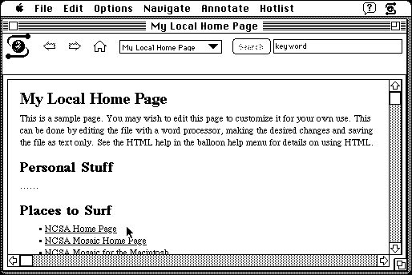

Download
NCSAMosaic103.zip (340K) NCSA Mosaic 1.0.3 repackaged into a zipped hfs disk image and checksum file. The disk image can be mounted with Mini vMac.
NCSAMosaic103.hqx (467K) NCSA Mosaic 1.0.3 in the original format.
copyright: University of Illinois
mod date: Jan 27, 1994
license: free for non-commercial use
from url :
NCSA Mosaic (for) Mac
According to one history page, "Mosaic was the first popular Web browser, and greatly helped spread use of the web across the world." Mini vMac doesn't yet support internet access, but Mosaic can still be used to read saved web pages. (User Guide available below.)

Download User Guide
userguide.1.0.cg.zip (766K) User Guide and viewer repackaged into a zipped hfs disk image and checksum file. The disk image can be mounted with Mini vMac.
userguide.1.0.cg.hqx (995K) User Guide in the original format.
cg-miniviewer-112.hqx (115K) Common Ground MiniViewer in the original format.
If you find these downloads useful, please consider helping the Gryphel Project, which hosts them.
Here are the md5 checksums for the downloads, signed with Gryphel Key 5:
--------- GRY SIGNED TEXT --------- ae8333339be790687f76bcbfa245eb00 NCSAMosaic103.zip bdcdba0a103fdd5fb9e9088fb795f086 NCSAMosaic103.hqx 4d073ce8f7acc60c878d2b5d2507b123 userguide.1.0.cg.zip 2491f10b81e53feb9a75f63459cf37da userguide.1.0.cg.hqx 3ae0192c075f768e5685d4d97b46e3e1 cg-miniviewer-112.hqx ------- BEGIN GRY SIGNATURE ------- Gry/4Xa8CFcUzxdN/JpcMCcxV9eenMelrgYqj/XrO/HetFaXRa0syvzHEmRDMnwN 9oSW04YzGtQN6ko3UYExnvSboG4p+YgTA2+qgBjf5ntafpZ8a1FZ/bBrYT4HdAfa AX/L3P3jNYUWRCJfeV2384r6oEvGMjjtVrh6t6f1zVRa8QV8SsqNSwQfdvKQRUGx -------- END GRY SIGNATURE --------